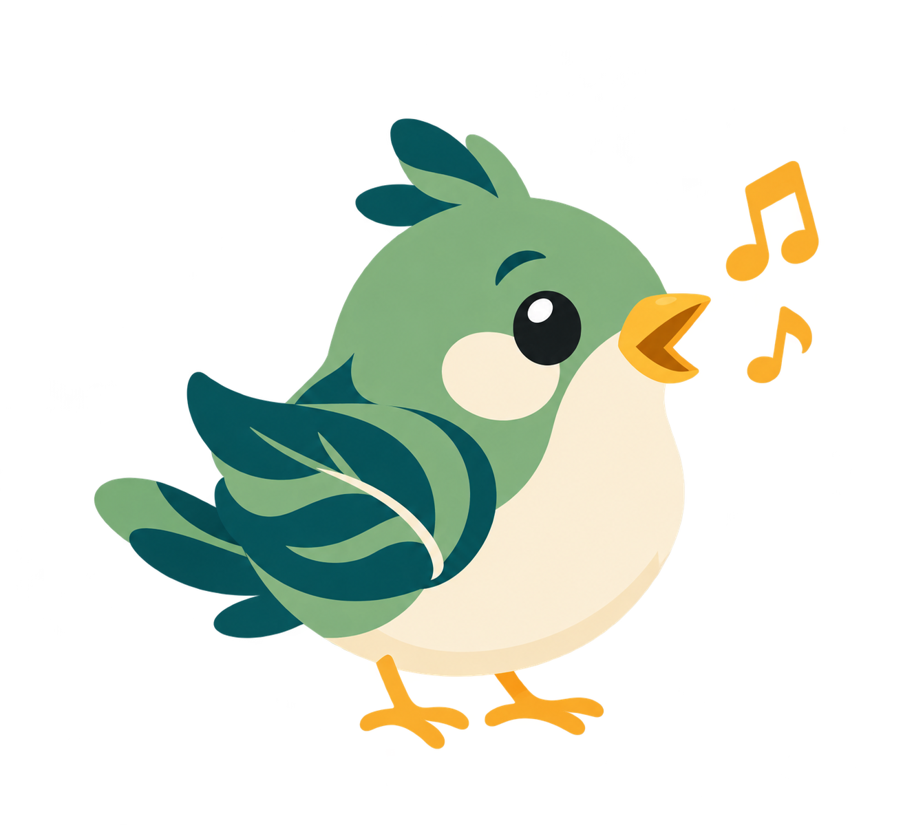

Import Songbird JSON with pitches, tempo and note durations. Finger placement is calculated automatically. Use a public-domain song, your own music, or a score you have permission to use.
Download JSON schema · Example song